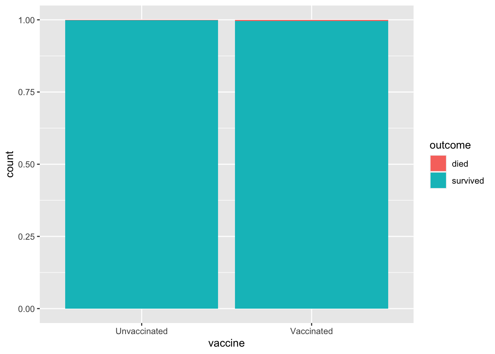
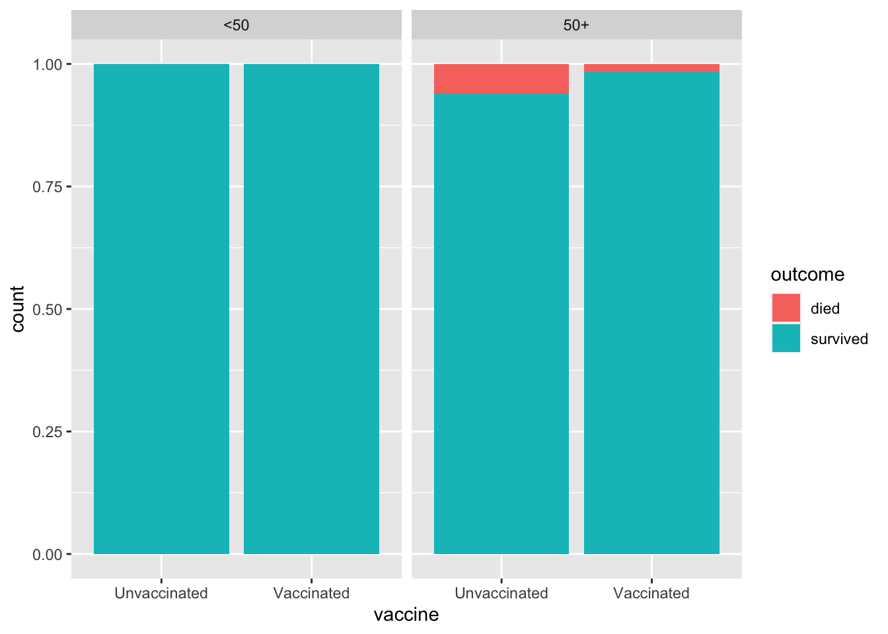
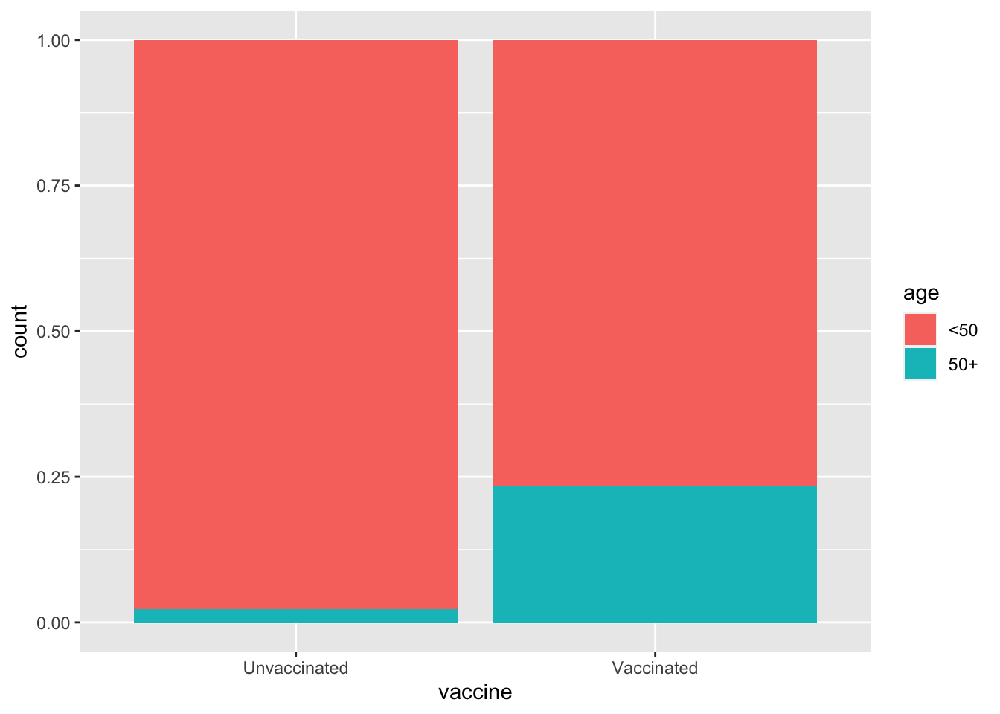

These are suggested answers for the application exercise. They’re not necessarily complete or 100% accurate, they’re roughly what we develop in class while going through the exercises.
The main question we’ll explore today is “How do deaths from COVID cases compare between vaccinated and unvaccinated?”
What do you think?
Goals
Creating data visualizations and calculating summary statistics for comparing trends across groups
Distinguishing observational studies and experiments
Reviewing various sampling methods
Identifying confounding variables and Simpson’s paradox
Packages
library(tidyverse)
── Attaching core tidyverse packages ──────────────────────── tidyverse 2.0.0 ──
✔ dplyr 1.1.3 ✔ readr 2.1.4
✔ forcats 1.0.0 ✔ stringr 1.5.0
✔ ggplot2 3.4.3 ✔ tibble 3.2.1
✔ lubridate 1.9.2 ✔ tidyr 1.3.0
✔ purrr 1.0.2
── Conflicts ────────────────────────────────────────── tidyverse_conflicts() ──
✖ dplyr::filter() masks stats::filter()
✖ dplyr::lag() masks stats::lag()
ℹ Use the conflicted package (<http://conflicted.r-lib.org/>) to force all conflicts to become errors
Data
The data for this case study come from a technical briefing published by Public Health England in August 2021 on COVID cases, vaccinations, and deaths from the Delta variant.
First, let’s load the data:
delta <-read_csv("data/delta.csv")
Rows: 268166 Columns: 3
── Column specification ────────────────────────────────────────────────────────
Delimiter: ","
chr (3): vaccine, age, outcome
ℹ Use `spec()` to retrieve the full column specification for this data.
ℹ Specify the column types or set `show_col_types = FALSE` to quiet this message.
Visualizing and summarizing categorical data
Exercise 1
How many rows and columns are in this dataset? Answer in a full sentence using inline code. What does each row represent and what does each column represent? For each variable, identify its type.
There are 268166 rows and 3 columns in the dataset. Each row represents a person with COVID, and the columns represent whether the person was vaccinated or not, their age, and whether they died or survived.
Exercise 2
Do these data come from an observational study or experiment? Why?
Observational study, people in the study chose to get vaccinated or not, they weren’t randomized into groups.
Exercise 3
Create a visualization of health outcome by vaccine status that allows you to compare the proportion of deaths across those who are and are not vaccinated. What can you say about death rates in these two groups based on this visualization?
While this is very difficult to see, the proportion of patients who died is slightly higher for the vaccinated group compared to the unvaccinated group.
ggplot(delta, aes(x = vaccine, fill = outcome)) +geom_bar(position ="fill")

Exercise 4
Calculate the proportion of deaths in among those who are vaccinated. Then, calculate the proportion among those who are not vaccinated.
Proportion of deaths among the vaccinated is 0.00407 and the proportion of deaths among the unvaccinated is 0.00166.
delta |>count(vaccine, outcome) |>group_by(vaccine) |>mutate(prop = n /sum(n))
# A tibble: 4 × 4
# Groups: vaccine [2]
vaccine outcome n prop
<chr> <chr> <int> <dbl>
1 Unvaccinated died 250 0.00166
2 Unvaccinated survived 150802 0.998
3 Vaccinated died 477 0.00407
4 Vaccinated survived 116637 0.996
Exercise 5
Create the visualization and calculate proportions from the two previous exercises, this time controlling for age. How do the proportions compare?
Among both the younger patients (<50) and the older patients (50+), proportions of deaths is smaller for the vaccinated.
ggplot(delta, aes(x = vaccine, fill = outcome)) +geom_bar(position ="fill") +facet_wrap(~age)

delta |>count(age, vaccine, outcome) |>group_by(age, vaccine) |>mutate(prop = n /sum(n))
# A tibble: 8 × 5
# Groups: age, vaccine [4]
age vaccine outcome n prop
<chr> <chr> <chr> <int> <dbl>
1 50+ Unvaccinated died 205 0.0596
2 50+ Unvaccinated survived 3235 0.940
3 50+ Vaccinated died 459 0.0168
4 50+ Vaccinated survived 26848 0.983
5 <50 Unvaccinated died 45 0.000305
6 <50 Unvaccinated survived 147567 1.00
7 <50 Vaccinated died 18 0.000200
8 <50 Vaccinated survived 89789 1.00
Exercise 6
Based on your findings so far, fill in the blanks with more, less, or equally: Is there anything surprising about these statements? Speculate on what, if anything, the discrepancy might be due to.
In 2021, among those in the UK who were COVID Delta cases, the vaccinated were more likely to die than the unvaccinated.
For those under 50, those who were unvaccinated were more likely to die than those who were vaccinated.
For those 50 and up, those who were unvaccinated were more likely to die than those who were vaccinated.
The relationshio between outcome and vaccine status changes depending on the age of the person.
Simpson’s Paradox
Simpson’s paradox is a phenomenon in which a trend appears in subsets of the data, but disappears or reverses when the subsets are combined. The paradox can be resolved when confounding variables and causal relations are appropriately addressed in the analysis.
Exercise 7
Let’s rephrase the previous question which asked you to speculate on why deaths among vaccinated cases overall is higher while deaths among unvaccinated cases are higher when we split the data into two groups (below 50 and 50 and up). What might be the confounding variable in the relationship between vaccination and deaths?
Age.
Exercise 8
Visualize and describe the distribution of seniors (50 and up) based on (a.k.a. conditional on) vaccination status. Hint: Your description will benefit from calculating proportions of seniors in each of the vaccination groups and working those values into your narrative.
The proportion of seniors (50+) is higher for the vaccinated group (0.233) compared to the unvaccinated group (0.0228).
ggplot(delta, aes(x = vaccine, fill = age)) +geom_bar(position ="fill")

delta |>count(vaccine, age) |>group_by(vaccine) |>mutate(prop = n /sum(n))